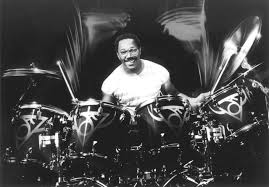

Drummers who have influenched me!
There are but a few of the many.

Billy Cobham, the father of Jazz Fusion, playing his massive custom
painted Tama drum kit from the Warning Album"
8
Here are some my favorite Billy Cobham Albums:
- 1973 Spectrum
- 1974 Crosswinds
- 1974 Total Eclipse
If you have time, you should read more about this incredible human being
on his
Wikipedia entry.
9
10
11
12
13